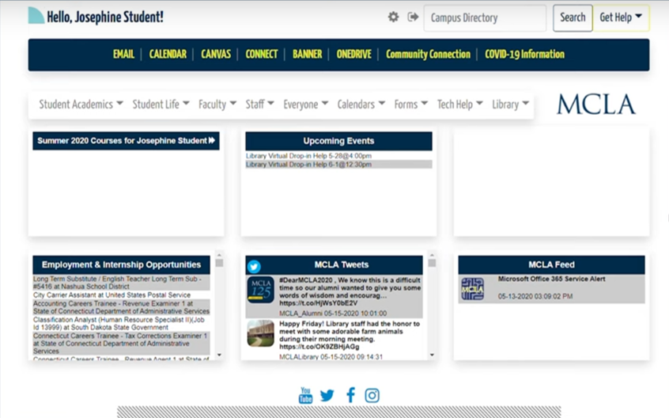

New Account Setup
Welcome to MCLA! This guide will help you set up your MCLA account, so you can log in to all of MCLA's systems, including your classes, WiFi, and more.
What You Will Need:
- Your MCLA ID. This is your unique ID, which looks like
A00001234. New students receive this in their acceptance materials; new staff or faculty receive it from Human Resources.
** If you don't know your MCLA ID, contact the Registrar at 413-662-5216 or registrar@mcla.edu.
- A laptop / desktop with a web browser. (We don't recommend using a mobile device for the setup process.)
** If you encounter an error at any step, we can help! Just contact the Help Desk at 413-662-5576 or helpdesk@mcla.edu.
Step 1: Create Your PIN.
- Go to https://lnk.mcla.edu/setup.
- Enter your MCLA ID, plus your temporary PIN.
** The PIN is your birthday as a 6-digit number (MMDDYY): for example, if your birthday is June 15, 2007, your temporary PIN is 061507.
- Immediately create a new (permanent) PIN, to replace the temporary PIN.
** FYI, this new PIN is not your password: you'll create that later.
- Click the "Change PIN" button, which will bring you to the next step...
Step 2: Create Your Password.
- On the Main Menu page, select the 1st item, "Set Up Your MCLA account".
- On the Welcome screen, click the blue button "Continue to set up the account for [your MCLA ID]" .
- Click through the process, which gives you important information about using MCLA systems.
- At the end of the process, copy the temporary (one-time use) password.
- Go to https://portal.mcla.edu/.
** This is the main login page for all your MCLA access!
- Enter your MCLA ID, and paste the temporary password you just copied.
- Immediately create a new (permanent) password, to replace the temporary password.
** Strong passwords are important for security! Read some tips to create a strong password.
Step 3: Log In to the Portal.
Log in at https://portal.mcla.edu with your MCLA ID and new password. When you see your personalized MCLA Portal page (as in the screenshot below), you've finished! You'll log in to your Portal for all your MCLA online access.
